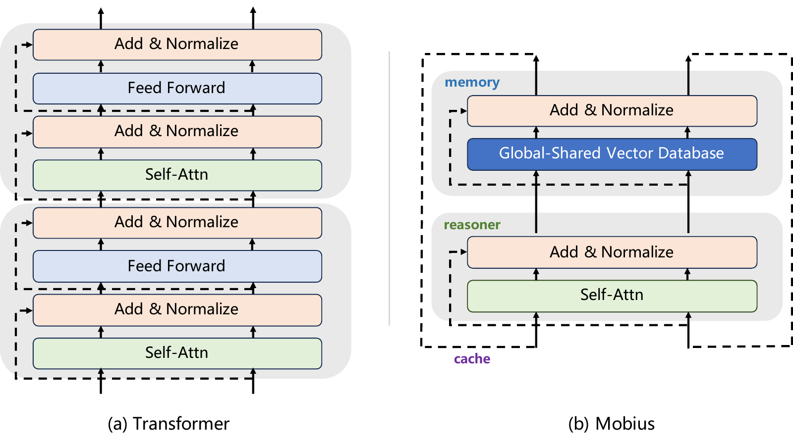

Intern-S2-Mobius: Foundation Model with Decoupled Knowledge and Reasoning.
Technical report
Decoupling knowledge and reasoning with a shared global memory and iterative reasoners, achieving nearly 4× end-to-end inference acceleration with the 35B model.